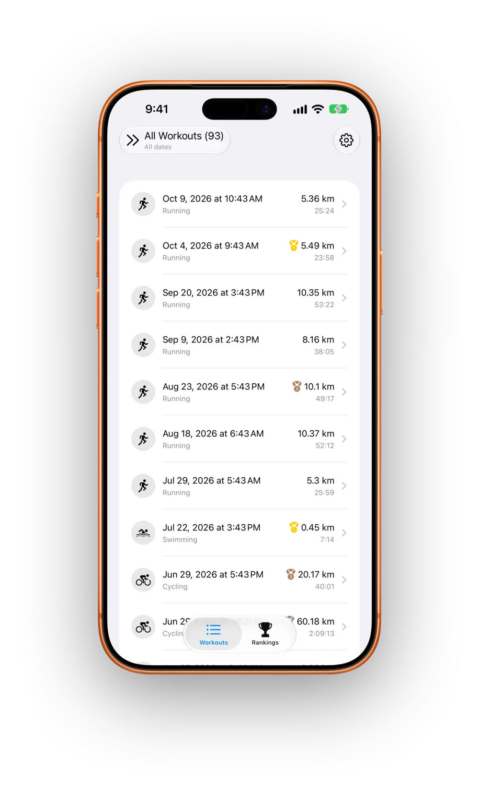
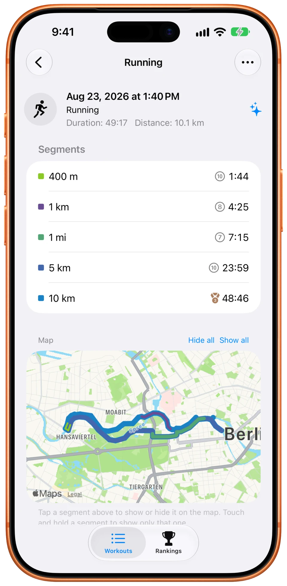
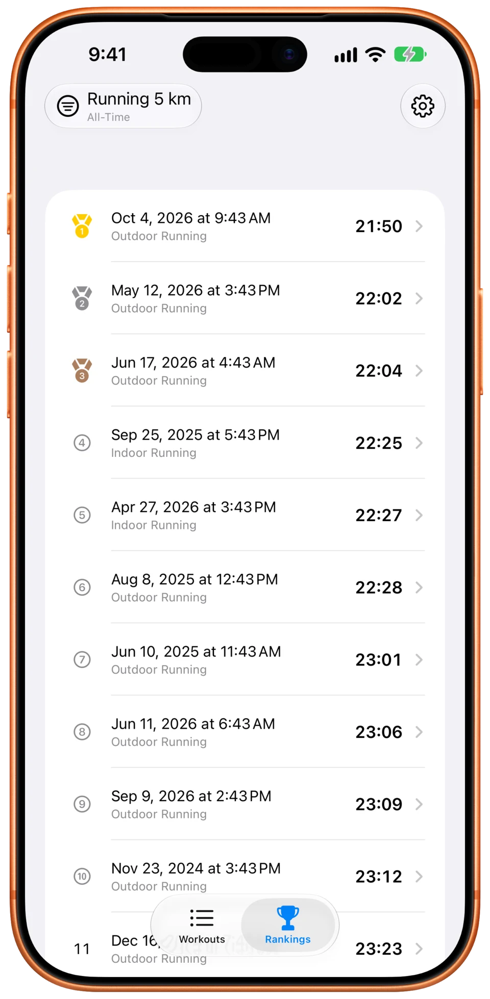

Your fastest efforts are hiding in plain sight.
Personal Bests digs your fastest mile, 5K or 400 m out of every workout in Apple Health and awards you medals for them. Nobody else on the leaderboard, no challenges to chase — just you, playing by your own rules.

Finds the bests you didn’t know you had
Your fastest 5K might be kilometres 7 to 12 of a half marathon. Personal Bests checks every stretch of every workout, so it finds the efforts you never recorded on their own.
- Segments can start and end anywhere in a workout
- Your whole Apple Health history, not just new workouts
- New workouts are analysed automatically, even in the background

Any distance, any timeframe
Your game, your rules. You decide which distances count and which stretch of time you’re measured against. Coming back from an injury? Rank against the past three months, not your all-time best.
- 400 m, 5K, marathon — or any distance you like
- All-time, the past year, or any window you choose
- Gold, silver and bronze medals show where every effort ranks

Private, and everywhere you train
Your results are seen by nobody but you, on iPhone, iPad and Mac. And nobody else is on your leaderboard either: no friends to beat, no strangers’ records, no challenges set by the app.
- Analysis runs on your device
- Syncs to iPad and Mac through your own iCloud
- No accounts, no ads, no tracking
That’s just the start — segment maps, widgets, notifications, tools to clean up bad recordings, and more.
See all featuresGo find your fastest mile.
It’s probably already in your workouts.